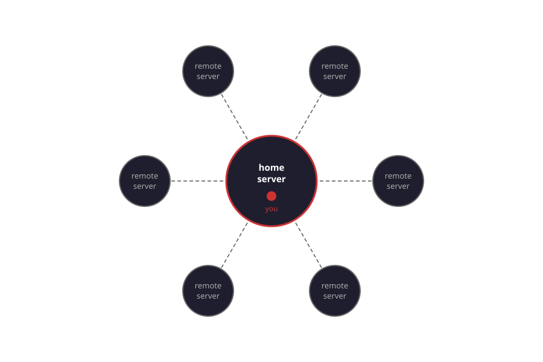
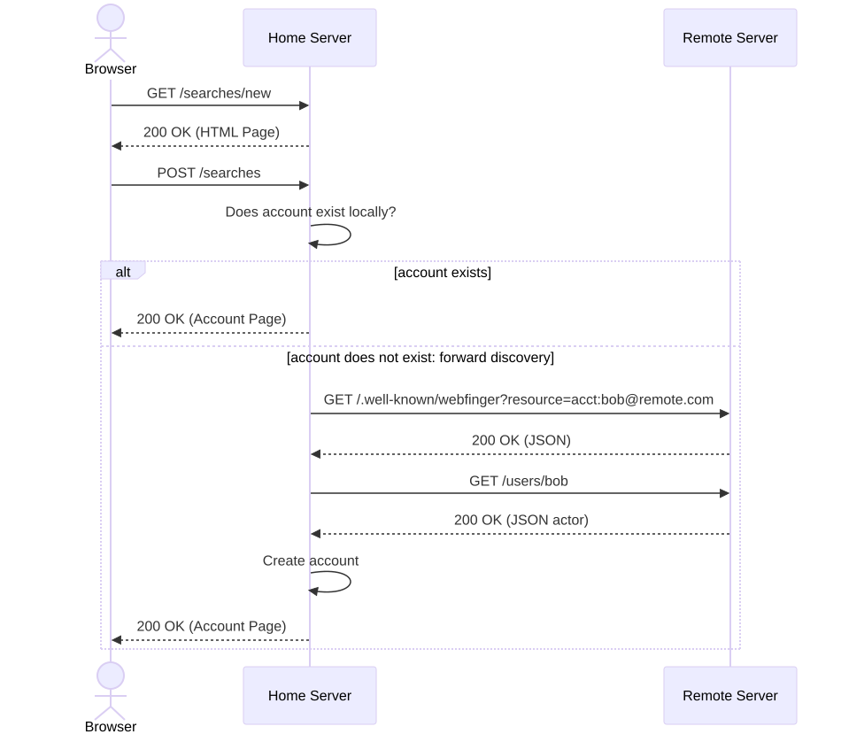
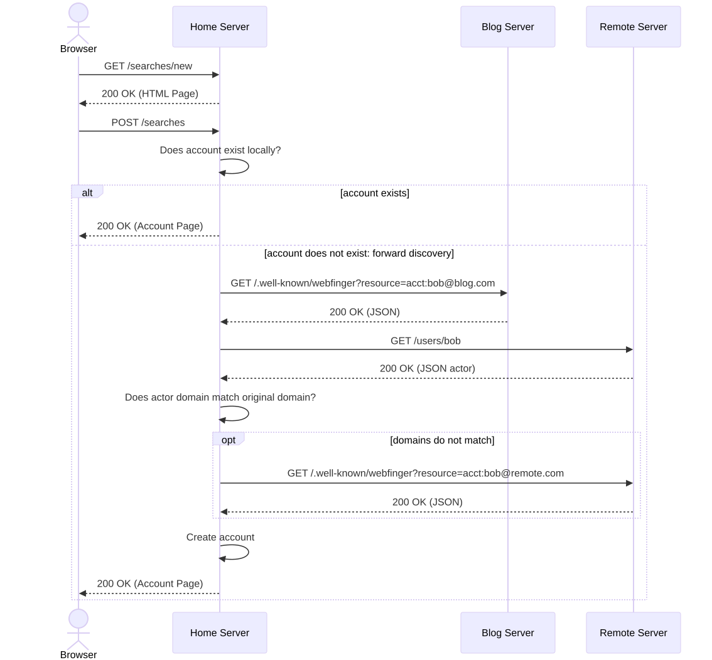

Tom Brown
@tom@herestomwiththeweather.com
Slides at https://otisburgsocial.github.io
"Community-owned independent social media sites"
— Darius Kazemi, on the fediverse

How do people find you if your server suddenly disappears?
Given a blog at example.com, we want to be known as bob@example.com.
Fediverse posts available on blog.
"Remote" Follow support: FEP-3b86 (Activity Intents)
in the user interface: @bob@example.com
on the wire protocol: acct:bob@example.com

3.3.10 :001 > require 'webfinger'
=> true
3.3.10 :002 > WebFinger.discover! 'acct:gargron@mastodon.social'
=>
{"subject"=>"acct:Gargron@mastodon.social",
"aliases"=>["https://mastodon.social/@Gargron", "https://mastodon.social/users/Gargron"],
"links"=>
[{"rel"=>"http://webfinger.net/rel/profile-page", "type"=>"text/html", "href"=>"https://mastodon.social/@Gargron"},
{"rel"=>"self", "type"=>"application/activity+json", "href"=>"https://mastodon.social/users/Gargron"},
{"rel"=>"http://ostatus.org/schema/1.0/subscribe", "template"=>"https://mastodon.social/authorize_interaction?uri={uri}"},
{"rel"=>"https://w3id.org/fep/3b86/Create", "template"=>"https://mastodon.social/share?text={content}"},
{"rel"=>"https://w3id.org/fep/3b86/Object", "template"=>"https://mastodon.social/authorize_interaction?uri={object}"},
{"rel"=>"http://webfinger.net/rel/avatar",
"type"=>"image/png",
"href"=>"https://files.mastodon.social/accounts/avatars/000/000/001/original/a0a49d80c3de5f75.png"}]}| canonical | bob@blog.com |
| as seen by dumb server |
bob@remote.com |
Problem 1 of 2
A server only doing forward discovery
will not use the canonical identifier.
Problem 2 of 2
The server hosting the actor document
needs to be aware of the canonical identifier.

@republik_magazin@republik.ch3.4.4 :010 > result = WebFinger.discover! 'acct:republik_magazin@republik.ch'
=>
{"subject" => "acct:republik_magazin@republik.ch",
...
3.4.4 :011 > link = result['links'].find {|l| l['rel'] == 'self'}
=> {"rel" => "self", "type" => "application/activity+json", "href" => "https://republik.social/users/republik_magazin"}
3.4.4 :012 > actor_url = URI(link['href'])
=> #<URI::HTTPS https://republik.social/users/republik_magazin>
3.4.4 :013 > request = Net::HTTP::Get.new(actor_url)
=> #<Net::HTTP::Get GET>
3.4.4 :014 > request['Accept'] = 'application/json'
=> "application/json"
3.4.4 :015 > http = Net::HTTP.new(actor_url.host, actor_url.port)
=> #<Net::HTTP republik.social:443 open=false>
3.4.4 :016 > http.use_ssl=true
=> true
3.4.4 :017 > response = http.request(request)
=> #<Net::HTTPOK 200 OK readbody=true>
3.4.4 :018 > actor = JSON.parse(response.body)
=>
{"@context" =>
...
3.4.4 :019 > ap_server_domain = URI.parse(actor['id']).hostname
=> "republik.social"
3.4.4 :020 > reverse_result = WebFinger.discover! "acct:#{actor['preferredUsername']}@#{ap_server_domain}"
=>
{"subject" => "acct:republik_magazin@republik.ch",
...To install Mastodon on mastodon.example.com in such a way it can serve @alice@example.com, set LOCAL_DOMAIN to example.com and WEB_DOMAIN to mastodon.example.com.
This also requires additional configuration on the server hosting example.com to redirect requests from
https://example.com/.well-known/webfinger to
https://mastodon.example.com/.well-known/webfinger
class WebfingerSerializer < ActiveModel::Serializer
attributes :subject, :links
def subject
object.to_webfinger_s
end
def links
[
{
"rel": "self",
"type": "application/activity+json",
"href": "#{object.actor_url}"
}
]
end
endfediverse_rss: https://otisburg.social/actor/tom@herestomwiththeweather.com.xml
{
"subject": "acct:tom@herestomwiththeweather.com",
"links": [
{"rel": "http://webfinger.net/rel/profile-page", "type": "text/html", "href": "https://herestomwiththeweather.com"},
{"rel": "self", "type": "application/activity+json", "href": "https://otisburg.social/actor/tom@herestomwiththeweather.com"},
{"rel": "https://w3id.org/fep/3b86/Follow",
"template": "https://otisburg.social/authorize_interaction?uri={object}"},
{"rel": "https://w3id.org/fep/3b86/Like",
"template": "https://otisburg.social/intents/like?objectId={object}"}
]
}
var resource = 'acct:' + user + '@' + host;
var url = 'https://' + host + '/.well-known/webfinger?resource=' + encodeURIComponent(resource);
try {
var resp = await fetch(url, { headers: { 'Accept': 'application/jrd+json, application/json' } });
if (!resp.ok) { showError('Server returned ' + resp.status); return; }
var data = await resp.json();
var rels = ['https://w3id.org/fep/3b86/Follow', 'https://w3id.org/fep/3b86/Object'];
var link = (data.links || []).find(function(l) { return rels.includes(l.rel); });
if (!link || !link.template) {
showError('Your server does not support remote follows (FEP-3b86).');
return;
}
window.location.href = link.template.replace('{object}', encodeURIComponent(actor));
Tom Brown
@tom@herestomwiththeweather.com
Slides at https://otisburgsocial.github.io